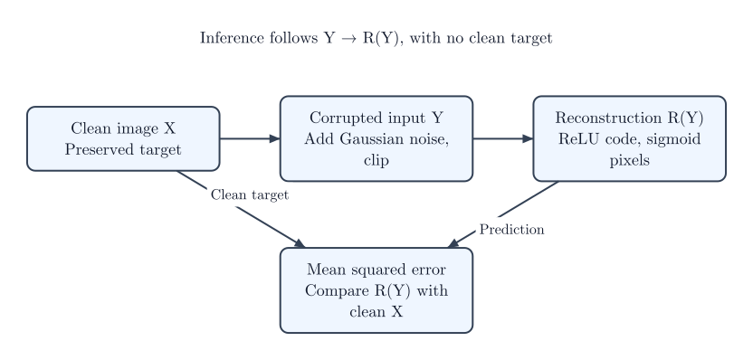
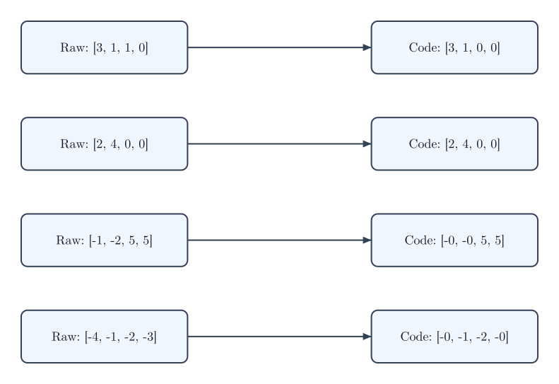
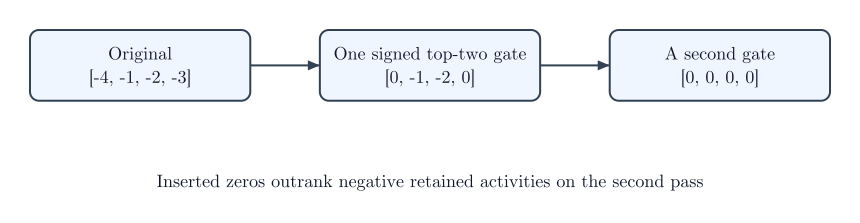
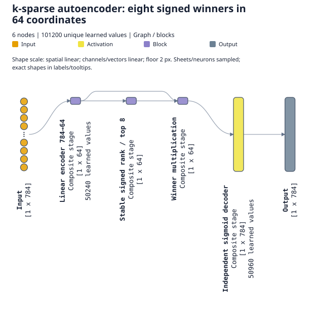
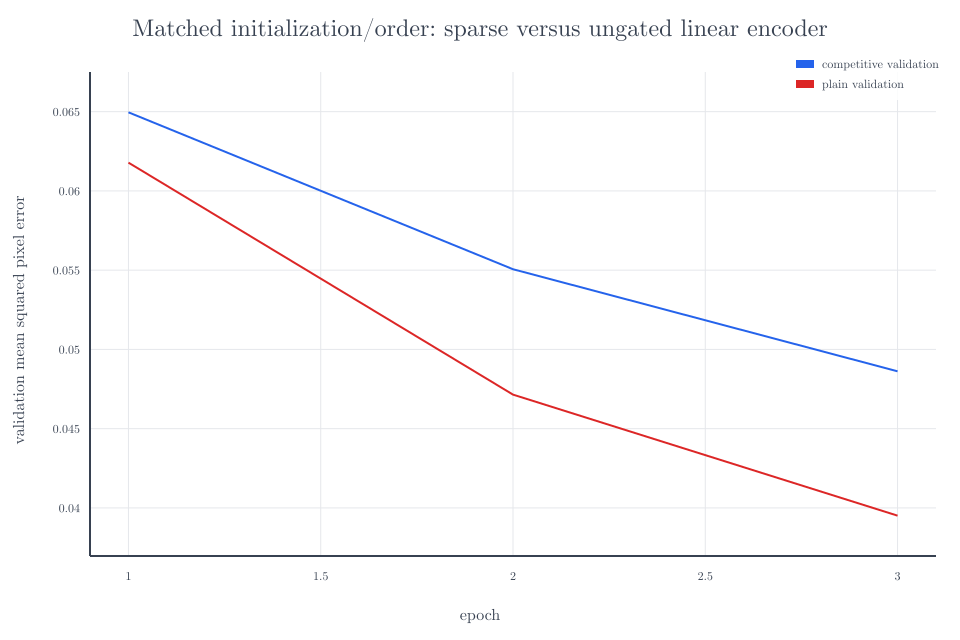
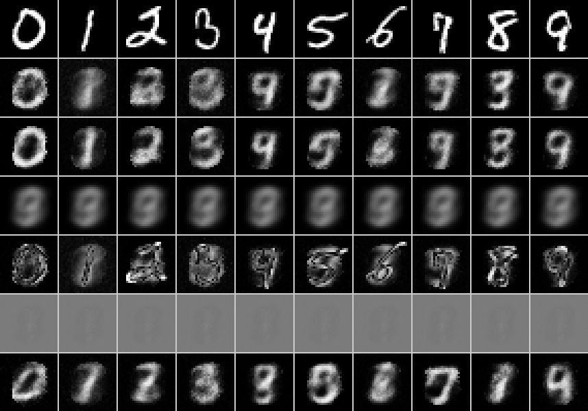

k-Sparse Autoencoders: Hard Competition between Signed Activities
Abstract
A compact image representation can still distribute information across every code coordinate. A k-sparse autoencoder limits how many coordinates are selected for each observation, forcing its features to compete. This report derives hard signed-activity selection and its gradients, checks ties and negative activities by hand, and trains the original 784–64–784 network on genuine MNIST. Its linear encoder keeps the eight largest signed values during both training and inference. With matched initial weights, minibatch order and optimization budget, the selected sparse model has held-out MSE 0.05003, versus 0.04134 for the ungated control and 0.06780 for the fitting mean. The sparse code therefore carries input information, but this short run gives no reconstruction advantage over the matched plain model and establishes no classification or bit-rate claim.
The method
For an image row \(x\in[0,1]^d\), the encoder computes linear activities \(a=xW_e+b_e\in\mathbb R^F\). Let \(S_k(a)\) contain the indices of the largest \(\min(k,F)\) *signed values*, with ties resolved by increasing feature index. The selector \(m_j(a)=\mathbf1\{j\in S_k(a)\}\) is detached; the code and reconstruction are
The mask is recomputed from each observation at inference too. There is no ReLU in this encoder, no sorting by absolute value, no L1 penalty and no straight-through gradient through the ranking. Selected negative values remain negative. Exactly k slots are selected when k≤F, but a selected zero does not become nonzero, so the number of nonzero code entries can be smaller. The model retains F coordinate slots; sparsity does not alone specify a compressed storage format.
#include <dm/dm.hpp>
int main() {
std::filesystem::create_directories("build");
dm::graphics::Diagram d(56, 1100);
d.node("x", {0, 0}, "Image x\n784 pixels")
.node("a", {5, 0}, "Linear encoder\n64 signed activities")
.node("m", {5, -2.5}, "Detached selector\nEight largest signed values")
.node("h", {10, 0}, "Sparse code h = a × m\nEight selected slots")
.node("r", {10, -3}, "Independent decoder\n784 sigmoid pixels")
.node("l", {0, -6}, "Pixel MSE\nOriginal image is the target")
.edge("x", "a")
.edge("a", "m")
.edge("a", "h")
.edge("m", "h")
.edge("h", "r")
.edge("r", "l")
.edge("x", "l")
.save_svg("build/k_sparse_method.svg");
}
Away from support changes, define \(D=2(\hat X-X)\odot\hat X\odot(1-\hat X)/(Nd)\), and \(E=(DW_d^\top)\odot M\). The continuous chain rule is
Unselected encoder coordinates receive zero gradient for that observation. Decoder biases still learn, and a feature can win on other observations. These are local fixed-support derivatives, not derivatives of an everywhere smooth function. Selection by stable sorting costs \(O(NF\log F)\), in addition to \(O(NdF)\) dense arithmetic. The implementation forms a dense masked code and uses dense matrix multiplication; it does not claim sparse-kernel acceleration.
The reusable models::CompetitiveMask and models::CompetitiveAutoencoder now live in the core.
The same components support a separate lifetime mode for the later winner-take-all example:
that mode competes across observations per feature and uses ReLU with a training-only gate.
This report exclusively fits per-observation competition with a linear encoder. Its ungated
control has the same linear encoder, independent weights, dimensions and initialization.
Four rows, stable ties and negative winners
For k=2, the four activity rows below exercise ordinary ordering, equal scores and an all-negative row. Equal scores keep the lower index. In the last row, −1 and −2 win over −3 and −4 even though the latter have larger magnitudes. Every mask entry and every derivative of the summed gated activities is checked against a fixed hand-calculated value.
#include <dm/dm.hpp>
int main() {
namespace n = dm::nn;
const auto x = n::tensor(
{3., 1., 1., 0., 2., 4., 0., 0., -1., -2., 5., 5., -4., -1., -2., -3.},
{4, 4},
n::DType::Float64)
.requires_grad_();
const auto mask = n::models::CompetitiveMask(x, false, 2);
const auto code = x * mask;
const auto gradient = n::grad(n::sum(code), {x})[0];
const auto expected = n::tensor(
{1., 1., 0., 0., 1., 1., 0., 0., 0., 0., 1., 1., 0., 1., 1., 0.}, {4, 4}, n::DType::Float64);
if (mask.requires_grad() || n::max(n::abs(mask - expected)).item() != 0 ||
n::max(n::abs(gradient - expected)).item() != 0)
return 1;
std::print(
"| raw activities | selector | code | derivative of summed code |\n|---|---|---|---|\n");
std::filesystem::create_directories("build");
dm::graphics::Diagram d(62, 1100);
for (int row = 0; row < 4; ++row) {
const auto raw = n::select(x, 0, row).values_str();
const auto kept = n::select(code, 0, row).values_str();
std::print(
"| {} | {} | {} | {} |\n",
raw,
n::select(mask, 0, row).values_str(),
kept,
n::select(gradient, 0, row).values_str());
const auto from = "raw" + std::to_string(row), to = "code" + std::to_string(row);
d.node(from, {0, -2.2 * row}, "Raw: " + raw)
.node(to, {8, -2.2 * row}, "Code: " + kept)
.edge(from, to);
}
d.save_svg("build/k_sparse_toy.svg");
}| raw activities | selector | code | derivative of summed code |
|---|---|---|---|
| [3, 1, 1, 0] | [1, 1, 0, 0] | [3, 1, 0, 0] | [1, 1, 0, 0] |
| [2, 4, 0, 0] | [1, 1, 0, 0] | [2, 4, 0, 0] | [1, 1, 0, 0] |
| [-1, -2, 5, 5] | [0, 0, 1, 1] | [-0, -0, 5, 5] | [0, 0, 1, 1] |
| [-4, -1, -2, -3] | [0, 1, 1, 0] | [-0, -1, -2, -0] | [0, 1, 1, 0] |

Checking the limits of hard signed selection
This signed selector is not the Euclidean best k-term projection, which would retain the largest magnitudes. For \(a=(-4,-1,-2,-3)\), signed top-two gives \((0,-1,-2,0)\), with squared discarded error 25; retaining magnitudes 4 and 3 would give error 5. It is not generally idempotent either: applying signed top-two again selects the two newly introduced zeros, giving the all-zero vector. The network applies the gate once per forward pass; it does not repeatedly prune its own code.
At a selection boundary, the code can jump. With k=1, activities \((1-\delta,1)\) and \((1+\delta,1)\) are only \(2\delta\) apart, but their codes approach \((0,1)\) and \((1,0)\). The output separation approaches \(\sqrt2\), even as the input separation tends to zero. Consequently neither continuity at ties nor a global nonexpansive-projection bound follows. The tie rule makes the result deterministic, not differentiable there. The program checks this counterexample and finite differences through a complete small model strictly away from ties.
#include <dm/dm.hpp>
int main() {
namespace n = dm::nn;
const auto type = n::DType::Float64;
const auto x = n::tensor({-4., -1., -2., -3.}, {1, 4}, type);
const auto once = x * n::models::CompetitiveMask(x, false, 2);
const auto twice = once * n::models::CompetitiveMask(once, false, 2);
const auto magnitude = n::tensor({-4., 0., 0., -3.}, {1, 4}, type);
if (n::sum(n::square(x - once)).item() != 25 || n::sum(n::square(x - magnitude)).item() != 5 ||
n::max(n::abs(twice)).item() != 0)
return 1;
std::print(
"Signed discarded squared error: 25; magnitude projection error: 5.\n\n| delta | input "
"separation | code separation |\n|---:|---:|---:|\n");
for (double delta : {.1, .01, .0001, .000001}) {
const auto left = n::tensor({1 - delta, 1.}, {1, 2}, type),
right = n::tensor({1 + delta, 1.}, {1, 2}, type);
const auto a = left * n::models::CompetitiveMask(left, false, 1),
b = right * n::models::CompetitiveMask(right, false, 1);
std::print(
"| {:.6f} | {:.6f} | {:.9f} |\n",
delta,
n::sqrt(n::sum(n::square(left - right))).item(),
n::sqrt(n::sum(n::square(a - b))).item());
}
n::ParameterStore p(1931, type);
const auto input = n::tensor({.1, .2, .8, .7, .3, .4}, {2, 3}, type).requires_grad_();
n::models::CompetitiveAutoencoder(p, input, false, false, 3, 4, 2);
const n::TensorFunction objective = [&](const auto& a) {
return n::mse(
n::models::CompetitiveAutoencoder(p, a[0], false, false, 3, 4, 2).training_reconstruction,
a[0]);
};
if (!n::gradcheck(objective, {input}, {.atol = 1e-8, .rtol = 1e-5}).ok ||
!n::gradgradcheck(objective, {input}, {.atol = 1e-8, .rtol = 1e-5}).ok)
return 1;
std::print("\nComplete-model input first/second finite differences pass on fixed support.\n");
std::filesystem::create_directories("build");
dm::graphics::Diagram d(58, 1100);
d.node("x", {0, 0}, "Original\n[-4, -1, -2, -3]")
.node("once", {5, 0}, "One signed top-two gate\n[0, -1, -2, 0]")
.node("twice", {10, 0}, "A second gate\n[0, 0, 0, 0]")
.edge("x", "once")
.edge("once", "twice")
.text({5, -2}, "Inserted zeros outrank negative retained activities on the second pass")
.save_svg("build/k_sparse_support.svg");
}Signed discarded squared error: 25; magnitude projection error: 5.
| delta | input separation | code separation |
|---|---|---|
| 0.100000 | 0.200000 | 1.486606875 |
| 0.010000 | 0.020000 | 1.421302220 |
| 0.000100 | 0.000200 | 1.414284275 |
| 0.000001 | 0.000002 | 1.414214269 |
Complete-model input first/second finite differences pass on fixed support.

The executed 101,200-parameter network
For d=784 and F=64, independent weights and biases contribute \(2dF+F+d=101200\) learned scalars. The diagram executes a one-image shape probe with Graph style and block detail. Named boundaries show the linear encoder, discrete rank selector, two-input winner multiplication and sigmoid decoder. The selector dependency is declared explicitly because host sorting creates a detached tensor; this does not add an autograd path through the ranking. Shared linear shape scales, a two-pixel visibility floor and at most six sampled feature-map planes and eight sampled vector units are explicit. Exact tensor shapes remain in labels and tooltips.
#include <dm/dm.hpp>
int main() {
namespace n = dm::nn;
n::ParameterStore p(1931);
n::Module model(
[&](const n::Tensor& input) {
const auto net = n::models::CompetitiveAutoencoder(p, input, false);
n::model_stage("Linear encoder 784→64", input, net.raw);
n::model_stage("Stable signed rank / top 8", net.raw, net.mask);
n::model_stage(
"Winner multiplication", std::vector<n::Tensor>{net.raw, net.mask}, net.code);
return n::model_stage("Independent sigmoid decoder", net.code, net.reconstruction);
},
"k-sparse autoencoder: eight signed winners in 64 coordinates");
n::ModelPlotOptions options;
options.style = n::ModelPlotStyle::Graph;
options.detail = n::ModelPlotDetail::Blocks;
options.max_neurons = 8;
options.sizing.spatial_scale = n::ModelPlotScale::Linear;
options.sizing.channel_scale = n::ModelPlotScale::Linear;
options.sizing.minimum_extent = 2;
options.sizing.max_planes = 6;
const auto figure = model.plot(n::zeros({1, 784}), options);
if (p.count() != 101200 || p.size() != 4 || figure.parameter_count() != 101200)
return 1;
std::filesystem::create_directories("build");
figure.save_svg("build/k_sparse_architecture.svg");
std::print(
"{} learned tensors; {} learned scalars; selector is detached.\n", p.size(), p.count());
}4 learned tensors; 101200 learned scalars; selector is detached.

Genuine MNIST pools
The canonical dataset API prepares the same class-balanced, disjoint original-MNIST pools as the earlier autoencoder reports: 1,000 fitting, 200 validation and 200 held-out images. Each is Float32 [N,28,28,1] in [0,1], flattened only when entering a dense model. Official source IDs, test labels and the provenance manifest are retained. Labels order the gallery only; they never enter fitting or checkpoint selection.
#include <dm/dm.hpp>
int main() {
namespace n = dm::nn;
std::filesystem::create_directories("build");
const std::filesystem::path cache = dm::datasets::data_home();
dm::datasets::prepare_example_data("mnist-assets", cache.string());
const auto pools = n::models::LoadSaliency(cache / "saliency");
n::save_npz(
"build/k_sparse_data.npz",
{{"fit_images", pools[0].images},
{"validation_images", pools[1].images},
{"test_images", pools[2].images},
{"fit_source_ids", pools[0].source},
{"validation_source_ids", pools[1].source},
{"test_source_ids", pools[2].source},
{"test_labels", pools[2].labels}});
std::filesystem::copy_file(
cache / "saliency" / "manifest.json",
"build/k_sparse_data_manifest.json",
std::filesystem::copy_options::overwrite_existing);
std::print("| pool | images | pixels per image | examples per digit |\n|---|---:|---:|---:|\n");
for (int i = 0; i < 3; ++i)
std::print(
"| {} | {} | 784 | {} |\n",
i == 0 ? "fit"
: i == 1 ? "validation"
: "test",
pools[i].images.size(0),
pools[i].images.size(0) / 10);
}| pool | images | pixels per image | examples per digit |
|---|---|---|---|
| fit | 1000 | 784 | 100 |
| validation | 200 | 784 | 20 |
| test | 200 | 784 | 20 |
Matched sparse and plain fits, with all updates visible
Both parameter stores start from seed 1931, with Glorot-uniform encoder/decoder weights and zero biases. All four tensors agree initially; their initial functions need not agree because only one applies a gate. Batch seed 1933 matches row order. Each model makes 96 Adam updates: three epochs, batch 32, all 1,000 images once per epoch and a final batch of eight. Adam uses learning rate 0.003, moments 0.9/0.999 and epsilon 1e-8. Every reconstruction target is the input image. The plain control retains all 64 linear activities; the sparse model selects eight.
Each model selects its own checkpoint by validation reconstruction MSE accumulated in Float64 from Float32 predictions, as in the source. The test set does not influence selection. The code saves initial outputs, all parameter snapshots, first gradients/batches, first-batch and final eight-row gate probes, and selected checkpoints. Fitting losses are pre-update minibatch means; validation evaluates post-epoch weights. No optimization is hidden in the core forward helper.
#include <dm/dm.hpp>
int main() {
namespace n = dm::nn;
std::map<std::string, n::Tensor> data;
for (const auto& [name, value] : n::load_npz("build/k_sparse_data.npz"))
data.emplace(name, value);
const auto fit = data.at("fit_images"),
validation = data.at("validation_images").reshape({200, 784});
const auto test = data.at("test_images").reshape({200, 784});
std::vector<double> matched;
std::vector<std::string> gradient_notes;
auto plot = dm::graphics::RPlot::create();
std::print("| model | epoch | fitting pre-update MSE | validation MSE |\n|---|---:|---:|---:|\n");
for (bool plain : {false, true}) {
const std::string name = plain ? "plain" : "competitive", prefix = "build/k_sparse_" + name;
n::ParameterStore p(1931);
{
n::NoGradGuard guard;
const auto net = n::models::CompetitiveAutoencoder(p, n::zeros({1, 784}), false, plain);
}
if (plain) {
if (p.flatten() != matched)
return 1;
} else
matched = p.flatten();
if (p.count() != 101200 || p.size() != 4)
return 1;
p.save(prefix + "_initial.npz");
{
n::NoGradGuard guard;
const auto initial = n::models::CompetitiveAutoencoder(p, test, false, plain);
n::save_npz(
prefix + "_initial_outputs.npz",
{{"code", initial.code}, {"reconstruction", initial.reconstruction}});
}
n::OptimizerConfig config;
config.kind = n::OptimizerKind::Adam;
n::Optimizer optimizer(p, .003, config);
n::BatchOrder batches(1000, 32, 1933);
double best = std::numeric_limits<double>::infinity();
int selected = 0, updates = 0;
std::vector<double> epochs, valid;
for (int epoch = 1; epoch <= 3; ++epoch) {
batches.begin_epoch();
double total = 0;
int seen = 0;
for (;;) {
const auto rows = batches.next();
if (rows.empty())
break;
const auto images = n::take_rows(fit, rows), input = images.reshape({images.size(0), 784});
const auto net = n::models::CompetitiveAutoencoder(p, input, false, plain);
const auto objective = n::mse(net.training_reconstruction, input);
if (n::max(n::abs(n::sum(net.mask, {1}) - (plain ? 64. : 8.))).item() != 0)
return 1;
if (updates == 0 || updates == 31) {
n::NoGradGuard guard;
const auto probe = n::models::CompetitiveAutoencoder(p, input, false, plain);
n::NamedTensors arrays;
if (updates == 31)
arrays.emplace_back("images", images);
arrays.insert(
arrays.end(),
{{"raw", probe.raw},
{"mask", probe.mask},
{"training_code", probe.training_code},
{"reconstruction", probe.training_reconstruction}});
n::save_npz(prefix + (updates == 0 ? "_first_probe.npz" : "_partial_probe.npz"), arrays);
}
if (updates == 0) {
n::GradOptions keep;
keep.retain_graph = true;
const auto gradients = n::grad(objective, p.parameters(), keep);
n::NamedTensors arrays;
for (std::size_t i = 0; i < gradients.size(); ++i) {
const double norm = n::sqrt(n::sum(n::square(gradients[i]))).item();
if (!std::isfinite(norm) || norm <= 0)
return 1;
arrays.emplace_back(p.names()[i], gradients[i]);
gradient_notes.push_back(
std::format("| {} | {} | {:.8f} |\n", name, p.names()[i], norm));
}
n::save_npz(prefix + "_first_gradients.npz", arrays);
n::save_npz(prefix + "_first_batch.npz", {{"images", images}});
}
const double value = objective.item();
if (!std::isfinite(value) || value < 0)
return 1;
total += rows.size() * value;
seen += int(rows.size());
optimizer.minimize(objective);
if (updates == 0)
p.save(prefix + "_first_update.npz");
++updates;
}
n::NoGradGuard guard;
const auto prediction =
n::models::CompetitiveAutoencoder(p, validation, false, plain).reconstruction;
const double score =
n::mse(n::cast(prediction, n::DType::Float64), n::cast(validation, n::DType::Float64))
.item();
if (seen != 1000 || !std::isfinite(score))
return 1;
p.save(prefix + "_epoch" + std::to_string(epoch) + ".npz");
if (score < best) {
best = score;
selected = epoch;
p.save(prefix + "_best.npz");
}
epochs.push_back(epoch);
valid.push_back(score);
std::print("| {} | {} | {:.9f} | {:.9f} |\n", name, epoch, total / seen, score);
}
if (updates != 96)
return 1;
n::save_npz(
prefix + "_selection.npz",
{{"epoch", n::full({}, selected, n::DType::Int32)},
{"validation_mse", n::full({}, best, n::DType::Float64)}});
plot.lines(
epochs,
valid,
name + " validation",
plain ? dm::graphics::RGB{220, 38, 38} : dm::graphics::RGB{37, 99, 235},
2.);
}
std::print("\n| model | parameter | first gradient L2 norm |\n|---|---|---:|\n");
for (const auto& line : gradient_notes)
std::print("{}", line);
plot.x_label("epoch")
.y_label("validation mean squared pixel error")
.title("Matched initialization/order: sparse versus ungated linear encoder")
.save_svg("build/k_sparse_learning.svg");
}| model | epoch | fitting pre-update MSE | validation MSE |
|---|---|---|---|
| competitive | 1 | 0.122697650 | 0.064958027 |
| competitive | 2 | 0.062598074 | 0.055058513 |
| competitive | 3 | 0.053826330 | 0.048617711 |
| plain | 1 | 0.096210543 | 0.061784075 |
| plain | 2 | 0.056939392 | 0.047147825 |
| plain | 3 | 0.045755533 | 0.039511032 |
| model | parameter | first gradient L2 norm |
|---|---|---|
| competitive | encoder/W | 0.00351886 |
| competitive | encoder/b | 0.00051967 |
| competitive | decoder/W | 0.00810249 |
| competitive | decoder/b | 0.00737570 |
| plain | encoder/W | 0.01679011 |
| plain | encoder/b | 0.00275410 |
| plain | decoder/W | 0.01411115 |
| plain | decoder/b | 0.00735302 |

Deployment and code controls on held-out images
Fresh stores restore the selected checkpoints. For each, the code checks all three pools, exact repeat/standalone decode agreement, single-versus-batch inference and immutable parameters. A zero-code decoder and a cyclic one-record shift of the codes retain the decoder weights but remove or misalign sample-specific information. Neither control is refitted. The fitting pixel mean is a separate constant baseline estimated without validation or test pixels. No labels enter these decisions, and this reconstruction task has no classification confusion matrix.
#include <dm/dm.hpp>
int main() {
namespace n = dm::nn;
std::map<std::string, n::Tensor> data;
for (const auto& [name, value] : n::load_npz("build/k_sparse_data.npz"))
data.emplace(name, value);
const auto clean = data.at("test_images").reshape({200, 784});
const auto mean = n::broadcast_to(
n::cast(
n::mean(
n::cast(data.at("fit_images").reshape({1000, 784}), n::DType::Float64), {0}, true),
n::DType::Float32),
clean.shape());
n::save_npz("build/k_sparse_mean.npz", {{"mean", mean}});
std::print(
"| model | held-out MSE | zero-code MSE | shifted-code MSE | selected slots per row "
"|\n|---|---:|---:|---:|---:|\n");
for (bool plain : {false, true}) {
const std::string name = plain ? "plain" : "competitive", prefix = "build/k_sparse_" + name;
n::ParameterStore p(1931);
p.load(prefix + "_best.npz", false);
const auto before = p.flatten();
n::NoGradGuard guard;
n::NamedTensors outputs;
for (const auto& split : {"fit", "validation", "test"}) {
const auto images = data.at(std::string(split) + "_images");
const auto net =
n::models::CompetitiveAutoencoder(p, images.reshape({images.size(0), 784}), false, plain);
outputs.emplace_back(std::string(split) + "_code", net.code);
outputs.emplace_back(std::string(split) + "_reconstruction", net.reconstruction);
outputs.emplace_back(std::string(split) + "_raw", net.raw);
outputs.emplace_back(std::string(split) + "_mask", net.mask);
}
const auto net = n::models::CompetitiveAutoencoder(p, clean, false, plain);
const auto repeat = n::models::CompetitiveAutoencoder(p, clean, false, plain);
const auto single =
n::models::CompetitiveAutoencoder(p, n::take_rows(clean, {0}), false, plain);
const auto decoded = n::dense(p, "decoder", net.code, 784, n::Activation::Sigmoid);
if (n::max(n::abs(repeat.reconstruction - net.reconstruction)).item() != 0 ||
n::max(n::abs(decoded - net.reconstruction)).item() != 0 ||
n::max(n::abs(single.reconstruction - n::take_rows(net.reconstruction, {0}))).item() > 1e-6)
return 1;
const auto zero = n::dense(p, "decoder", n::zeros({200, 64}), 784, n::Activation::Sigmoid);
const auto shifted_code =
n::concat({n::slice_axis(net.code, 0, 1, 200), n::slice_axis(net.code, 0, 0, 1)}, 0);
const auto shifted = n::dense(p, "decoder", shifted_code, 784, n::Activation::Sigmoid);
outputs.emplace_back("zero_reconstruction", zero);
outputs.emplace_back("shuffled_reconstruction", shifted);
n::save_npz(prefix + "_outputs.npz", outputs);
std::vector<std::int64_t> rows(32);
std::iota(rows.begin(), rows.end(), 0);
const auto images = n::take_rows(data.at("test_images"), rows);
const auto probe =
n::models::CompetitiveAutoencoder(p, images.reshape({32, 784}), false, plain);
n::save_npz(
prefix + "_selected_probe.npz",
{{"images", images},
{"raw", probe.raw},
{"mask", probe.mask},
{"training_code", probe.training_code},
{"reconstruction", probe.training_reconstruction}});
if (before != p.flatten() ||
n::max(n::abs(n::sum(net.mask, {1}) - (plain ? 64. : 8.))).item() != 0)
return 1;
std::print(
"| {} | {:.9f} | {:.9f} | {:.9f} | {} |\n",
name,
n::mse(n::cast(net.reconstruction, n::DType::Float64), n::cast(clean, n::DType::Float64))
.item(),
n::mse(n::cast(zero, n::DType::Float64), n::cast(clean, n::DType::Float64)).item(),
n::mse(n::cast(shifted, n::DType::Float64), n::cast(clean, n::DType::Float64)).item(),
plain ? 64 : 8);
}
std::print(
"\nFitting-mean MSE {:.9f}. Fresh restore, exact encode/decode/repeat and immutable weights "
"pass.\n",
n::mse(n::cast(mean, n::DType::Float64), n::cast(clean, n::DType::Float64)).item());
}| model | held-out MSE | zero-code MSE | shifted-code MSE | selected slots per row |
|---|---|---|---|---|
| competitive | 0.050034922 | 0.218057952 | 0.069472683 | 8 |
| plain | 0.041335177 | 0.222259377 | 0.069475490 | 64 |
Fitting-mean MSE 0.067798074. Fresh restore, exact encode/decode/repeat and immutable weights pass.
Both models select epoch 3. The sparse model's held-out MSE 0.05003 is about 26.2% below the fitting mean's 0.06780, but about 21.0% above the plain control's 0.04134. Zero and shifted sparse codes yield MSE 0.21806 and 0.06947, respectively. Alignment of a nonconstant code with its own image matters, but sparsity gives no reconstruction advantage under this small budget. These are single-seed results, not an estimate of run-to-run variability or a test of the original paper's downstream classification results.
The gallery chooses the first held-out occurrence of each digit 0–9, without quality filtering. Rows are original, sparse reconstruction, plain reconstruction, fitting mean, absolute sparse error, zero-code decoder and shifted-code decoder. Every panel uses the same [0,1] grayscale; errors are unamplified. Retaining fewer code coordinates does not guarantee recognisable digits.
#include <dm/dm.hpp>
int main() {
namespace n = dm::nn;
std::map<std::string, n::Tensor> data, sparse, plain;
for (const auto& [key, value] : n::load_npz("build/k_sparse_data.npz"))
data.emplace(key, value);
for (const auto& [key, value] : n::load_npz("build/k_sparse_competitive_outputs.npz"))
sparse.emplace(key, value);
for (const auto& [key, value] : n::load_npz("build/k_sparse_plain_outputs.npz"))
plain.emplace(key, value);
const auto mean = n::load_npz("build/k_sparse_mean.npz")[0].second;
const auto labels = data.at("test_labels").to_vector<int>(),
ids = data.at("test_source_ids").to_vector<int>();
const auto clean = data.at("test_images").reshape({200, 784});
std::vector<std::int64_t> rows;
for (int digit = 0; digit < 10; ++digit) {
const auto found = std::find(labels.begin(), labels.end(), digit);
if (found == labels.end())
return 1;
rows.push_back(found - labels.begin());
}
std::vector<n::Tensor> panels;
for (const auto& values : std::vector<n::Tensor>{
clean,
sparse.at("test_reconstruction"),
plain.at("test_reconstruction"),
mean,
n::abs(sparse.at("test_reconstruction") - clean),
sparse.at("zero_reconstruction"),
sparse.at("shuffled_reconstruction")})
panels.push_back(n::take_rows(values, rows));
n::save_image_grid(
n::concat(panels, 0).reshape({70, 28, 28, 1}),
"build/k_sparse_reconstructions.png",
10,
0,
1,
2,
.8,
3);
std::print("| digit | original MNIST source ID |\n|---:|---:|\n");
for (int digit = 0; digit < 10; ++digit)
std::print("| {} | {} |\n", digit, ids[rows[digit]]);
}| digit | original MNIST source ID |
|---|---|
| 0 | 66921 |
| 1 | 63380 |
| 2 | 68936 |
| 3 | 62280 |
| 4 | 62094 |
| 5 | 65222 |
| 6 | 61209 |
| 7 | 61721 |
| 8 | 69402 |
| 9 | 62570 |

The optional development oracle scripts/check_k_sparse_autoencoder.py reads the native
archives without preparing data or fitting a model. Its independent Float64 NumPy calculation
checks all 202,400 first-batch parameter derivatives (maximum absolute difference below 1.7e-10),
both Float32 first Adam updates bit for bit, every retained gate probe and all 2,822,400 predicted
pixels across the three pools and code controls. Pool predictions agree within 5.1e-7, with no
changed rank decisions; the smallest selected-versus-unselected score gap is 6.5e-5. All source
arrays in 27 report archives also match an execution of the original C++ example, including
initial outputs, twelve parameter snapshots and the eight-row final minibatch probes.
Conclusion
Hard competition creates winner-only gradients on each locally fixed support, while its signed ranking and tie behaviour impose limits that a smooth or magnitude-based projection would not have. The original small model and explicit optimization loop remain intact, with matched weights, row order, validation selection and deployment checks. Its code carries sample information, but this three-epoch study favours the ungated control on pixel MSE. It does not establish a semantic representation, a classification improvement, sparse-kernel speedup or a file-compression bit rate.
References
- Makhzani, A. and Frey, B. (2013, revised 2014). [k-Sparse Autoencoders](https://arxiv.org/abs/1312.5663). This educational variant preserves signed linear activities and hard per-image selection but uses raw unit pixels, an untied sigmoid decoder and a small reconstruction experiment.
- Makhzani, A. and Frey, B. (2014, revised 2015). [Winner-Take-All Autoencoders](https://arxiv.org/abs/1409.2752). The reusable component also supports a separate lifetime mode; no lifetime model is fitted here.
- LeCun, Y., Bottou, L., Bengio, Y. and Haffner, P. (1998). Gradient-based learning applied to document recognition. [Proceedings of the IEEE 86(11), 2278–2324](https://doi.org/10.1109/5.726791).